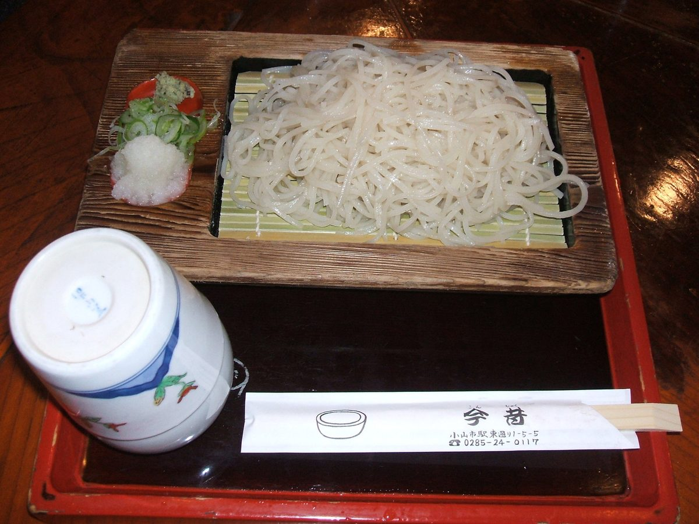
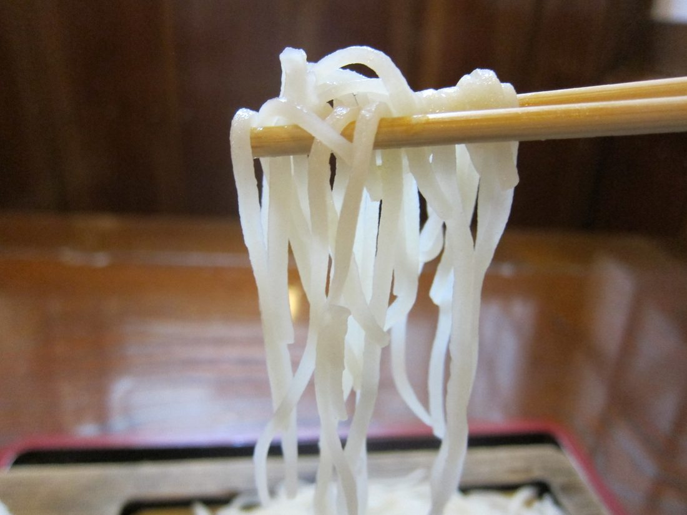

手打そば
打ちたての蕎麦を、温かく、冷たく。変わりそばからお飲みものまで、すべてのお品をこちらに並べております。

蕎麦の実の中心部の白いそば粉で打ったそばです。冷たいおそばでお出しします。大盛は300円増しとなります。
大盛は300円増しとなります。

うどんは太麺と細麺がございます（太麺は11月〜3月、温かいおうどんに限ります）。うどんの温かい汁は関東風と関西風がございます。大盛は300円増しとなります。
煮干し粉入りの白だしつゆです。ほかの温かいそば・うどんのつゆも白だしに変更できます。通常のつゆでもお作りします。野菜そばの薬味に付いているお味噌は、味変用です。よく溶いてお入れください。
揚げ物付きのおそばも冷かけにできます。白だしの冷かけもできます。薄口がお好みの方、つゆだくがお好みの方にもお薦めです。
本わさびは、つゆに溶かさず、そばに付けてお召し上がりください。